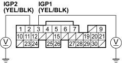
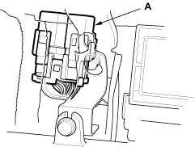

- Measure voltage between the PGM-FI main relay 1 4P connector terminal No. 4 and body ground.

Is there battery voltage?
YES - Go to step 48.
NO - Repair open in the wire between the No. 6 ECU (ECM/PCM) (15 A) fuse and the PGM-FI main relay 1. 
- Check for continuity between the PGM-FI main relay 1 4P connector terminal No. 3 and ECM connector terminal E7.

Is there continuity?
YES - Test the PGM-FI main relay 1, refer to the 2001 Civic Shop Manual (see page 22-80). If the relay is OK, substitute a known-good ECM and recheck (see page 11-5). If symptom/indication goes away, replace the original ECM.
NO - Repair open in the wire between the PGM-FI main relay 1 and the ECM (E7).

- Reconnect ECM connector E (31P).
- Turn the ignition switch ON (II).
- Measure voltage between body ground and ECM connector terminals A2 and A3 individually.
ECM CONNECTOR A (31P)

Wire side of female terminals
Is there battery voltage?
YES - Go to step 58.
NO - Go to step 52.
- Turn the ignition switch OFF.
- Remove the PGM-FI main relay 1 (A).
LHD model:

RHD model: